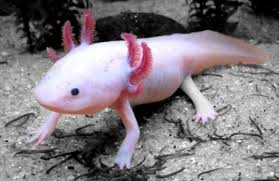

O rosto peculiar do axolote, com brânquias externas que parecem uma juba ou chifres, tornou-o extremamente carismático:

Jogos e Animes: Ele serviu de inspiração para criaturas de grandes franquias, como os Pokémon Wooper e Mudkip. Também é um mob oficial muito famoso dentro do jogo Minecraft, onde pode ser domesticado e usado em batalhas aquáticas.
Memes e Web: É constantemente celebrado na internet como o "anfíbio sorridente", estrelando memes sobre super-heróis da vida real devido à sua genética regenerativa
Na cultura pop gamer e dos quadrinhos, eles também aparecem como itens e entidades cósmicas — como em Gravity Falls. Apesar do sucesso, é importante lembrar que eles estão protegidos e sua compra e venda no Brasil é ilegal (considerada crime ambiental com multa de R$ 5.000 por animal). No entanto, é possível vê-los de forma legal e segura em alguns zoológicos e aquários autorizados.

O axolote (Ambystoma mexicanum) tornou-se um fenômeno global. Esse anfíbio, originário dos lagos de Xochimilco no México, foi alavancado ao estrelato na cultura pop mundial graças à sua inclusão no jogo Minecraft em 2021, inspirando brinquedos, animações, memes e despertando o alerta sobre a sua conservação.
O Efeito Minecraft: O jogo transformou o axolote em um personagem "pet" carismático e útil. A popularidade do game levou a imagem do animal a milhões de crianças e jovens no mundo todo